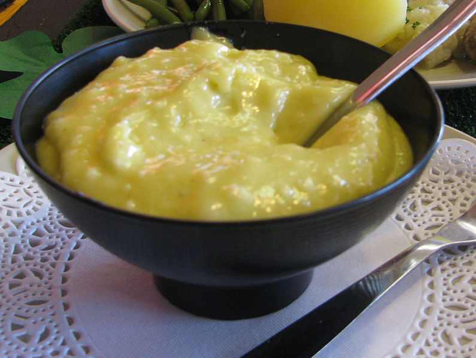

Allioli Recipe

Description
Probably the easiest recipe you will see, at least in theory.
You may know it as a sort of seasoned mayonaise, maybe you think it should contain egg. But it is not needed at all, at its purest form is also the most delicious.
Be aware that it is a bit hard to crush, and needs practice.
This is the common Spanish / Mediterranean way, this is also present on Southern France and some parts of Italy as "alioli"...
Ingredients
- Mortar and pestle - ideally ceramic
- Garlic cloves - 2 to 6
- Olive oil - as needed
- Salt (optional)
Steps
- Crush the garlic cloves with the mortar and pestle, until it is well mashed. This would be a good time to put some salt, although I recommend not doing it the first time.
- Begin to pour oil into the mortar but very slowly, and keep crushing / mixing it, always in the same direction. This might go on for a few minutes, do not do it too fast!
- Be careful not to add too much oil or it will not emulsionate. When you can separate the allioli from the mortar, it is prepared!